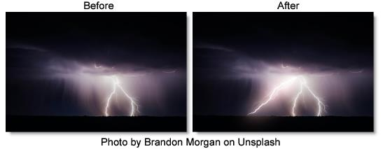

S_UltraZap
Description
Generates lightning bolts along a spline and renders them over a background with added UltraGlow options.
The S_UltraZap filter comes from the Emmy award winning Boris FX Sapphire filter set.
Category
Render.
Controls
Presets
To select a preset, pick one from the Presets window.
Time
The effect is advanced in time.
Control Points
Start Point
The starting point of the bolts.
Point 1 Enable
Enables Point 1.
Control Point 1
First control point.
Point 2 Enable
Enables Point 2.
Control Point 2
Second control point.
Point 3 Enable
Enables Point 3.
Control Point 3
Third control point.
Point 4 Enable
Enables Point 4.
Control Point 4
Fourth control point.
End Point
The end point of the bolts
Bolt Structure
Bolts
The number of lightning bolts to draw between the Start and End location.
Bolt Width
The width of the lightning bolts.
Bolt Length
The length of the lightning bolts. If less than 1, the bolts will not be drawn all the way from start to end.
Wrinkle Amp
Scales the amount of wrinkles in the bolts. Decrease for straighter, smoother bolts or increase for more kinky bolts.
Curve Amp
Similar to Wrinkle Amp but affects the general path of the bolt. If decreased, the bolt will stay closer to the line between the Start and End points. If increased, it can wander further away from this line. This differs from the Wrinkle Amp parameter in that it can be used to make straighter bolts while still keeping the wrinkles at the detailed level.
Taper Start
Determines how pointed the start of the bolts are. If 0, the entire bolt will have equal width. If 1, the bolts will thin out along their entire length for a pointed end. If it is .5, the bolts will start thin and grow to the width parameter at the center of the bolt.
Taper End
Determines how pointed the end of the bolts are. If 0, the entire bolt will have equal width. If 1, the bolts will thin out along their entire length for a pointed end. If it is .5, the bolts will start thinning out halfway between the start and end points.
Feather Bolt
Add softness to the bolt before glowing.
Zap Edge Blur
Only blur the edges of the zap. This is useful if there is noise on the zap.
Zap Brightness
Scales the brightness of the lightning bolts.
Start Color
The color at the start of the main bolt.
End Color
The color at the tip of the main bolt.
Vary Bolt Hue
This varies the start and end color between multiple bolts. This does not change the color along a single bolt.
Vary Width
The amount of random variation in the width of the bolts along their lengths.
Vary Endpoint
Offsets the End location by a random amount within a circle of this radius. If Bolts is greater than 1, this can be useful to spread out the different End points. For example, you can create multiple radiating bolts by increasing this radius and placing the End point near the Start point.
Random Seed
Used to initialize the random number generator. The actual seed value is not significant, but different seeds produce different random lightning bolts and the same value should give a repeatable result.
Bolt Animation
Start Offset
The offset from the start point of where bolts are drawn.
Bolt Noise
Applies a noise pattern to the bolt before the glow.
Bolt Noise Freq
The frequency of the bolt noise.
Bolt Branchiness
Branches Only
Hides the core bolt and only shows the branches.
Branchiness
Scales the number of additional bolts that branch from the main bolt. Set this to 0 for basic bolts with no extra branches.
Branch Angle
The maximum angle of the random branches relative to the bolt they are branching off of. If this is 0, the branches will be more lined up with the main bolt. With larger values, the branches will be more perpendicular to the main bolt.
Branch Length
The scaled length of the branches relative to the distance between the Start and End points.
Branch Color
The color at the tips of the branches.
Vary Branch Hue
Varies the end color between multiple branches.
Branch Style
Specifies how the branch width should be calculated.
Width Uses Dist
Branch width is calculated based on how far along the bolt the branch splits off.
Width Uses Bolt Width
Branch width is calculated based on how wide the bolt is at the point where the branch splits off.
Branch Width
Width of branches relative to the main bolt.
Secondary Bolt Structure
Secondary Bolts
The number of lightning bolts to draw between the Start and End location.
Secondary Bolt Width
The width of the lightning bolts.
Secondary Length
The length of the lightning bolts. If less than 1, the bolts will not be drawn all the way from start to end.
Secondary Wrinkle Amp
Scales the amount of wrinkles in the bolts. Decrease for straighter, smoother bolts or increase for more kinky bolts.
Secondary Curve Amp
Similar to Wrinkle Amp but affects the general path of the bolt. If decreased, the bolt will stay closer to the line between the Start and End points. If increased, it can wander further away from this line. This differs from the Wrinkle Amp parameter in that it can be used to make straighter bolts while still keeping the wrinkles at the detailed level.
Secondary Taper Start
Determines how pointed the start of the bolts are. If 0, the entire bolt will have equal width. If 1, the bolts will thin out along their entire length for a pointed end. If it is .5, the bolts will start thin and grow to the width parameter at the center of the bolt.
Secondary Taper End
Determines how pointed the end of the bolts are. If 0, the entire bolt will have equal width. If 1, the bolts will thin out along their entire length for a pointed end. If it is .5, the bolts will start thinning out halfway between the start and end points.
Secondary Brightness
Scales the brightness of the lightning bolts.
Secondary Start Color
The color at the start of the main bolt.
Secondary End Color
The color at the tip of the main bolt.
Secondary Vary Bolt Hue
This varies the start and end color between multiple bolts. This does not change the color along a single bolt.
Secondary Vary Width
The amount of random variation in the width of the bolts along their lengths.
Secondary Vary Endpoint
Offsets the End location by a random amount within a circle of this radius. If Bolts is greater than 1, this can be useful to spread out the different End points. For example, you can create multiple radiating bolts by increasing this radius and placing the End point near the Start point.
Secondary Seed
Used to initialize the random number generator. The actual seed value is not significant, but different seeds produce different random lightning bolts and the same value should give a repeatable result.
Secondary Bolt Animation
Secondary Start Offset
The offset from the start point of where bolts are drawn.
Secondary Bolt Branchiness
Secondary Branchiness
Scales the number of additional bolts that branch from the bolt. Set this to 0 for basic bolts with no extra branches.
Secondary Branch Angle
The maximum angle of the random branches relative to the bolt they are branching off of. If this is 0, the branches will be more lined up with the main bolt. With larger values, the branches will be more perpendicular to the main bolt.
Secondary Branch Width
Width of branches relative to the bolt.
Secondary Branch Length
The scaled length of the branches relative to the distance between the Start and End points.
Secondary Branch Color
The color at the tips of the branches.
Secondary Vary Branch Hue
Varies the end color between multiple branches.
Ultra Glow
Glow Brightness
Scales the brightness of the lightning glow.
Glow Threshold
Threshold for what colors are glowed from the zap.
Glow Color
Scales the color of the lightning glow.
Glow Width
The width of the lightning glow.
Glow Width Red
The relative red width of the glow.
Glow Width Green
The relative green width of the glow.
Glow Width Blue
The relative blue width of the glow.
Glow Falloff
Boost or cut the distance that the glow extends.
Glow Bias
Amount to grow the outskirts of the thresholded result, or shrink if negative.
After Glow Width
Scales the glow distance of the secondary glow.
After Glow Color
Scales the color of the secondary glow.
Glow Highlights
Enables highlights using an electrical plasma texture.
Glow Highlights Freq
The spatial frequency of the highlights. Increase to zoom out or decrease to zoom in.
Glow Atmosphere
Enables/disables the atmosphere layer.
Glow Atmosphere Amp
Adjusts the amount, or amplitude, of the atmospheric effect. 0 gives a smooth glow, higher values give more dusty look.
Glow Atmosphere Freq
Controls the spatial frequency of the atmospheric noise. Turn this up to get finer details or turn down for broader overall variation.
Composite
Combine
Determines how the lightning and glow are combined with the image.
Screen
Performs a blend function which can help prevent overly bright results.
Add
Adds the lightning to the image. This gives brighter glows over light backgrounds.
Zap Only
Renders the lightning over black.
Bg Brightness
Scales the brightness of the image before combining with the lightning. If 0, the result will contain only the lightning over black.
Show Spline
Enables/disables the on-screen control for displaying the spline.